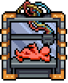
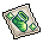

Calculators for Legends of IdleOn. Pick a tool, import your IdleonToolbox save, and everything is worked out in your browser. Your save is never uploaded.

World 3 · 3D PrinterCompares the efficiency of your sampling characters with the five best public samplers on the IdleonToolbox leaderboard, for Mining, Chopping, Catching and Fishing.

World 1 · StampsShows which stamp upgrades you can actually do: the material cost of each stamp's next upgrade against the most any one of your characters can carry.